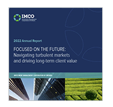

IMCO posts a -8.1% return in 2022; outperforms benchmark
On April 13, IMCO released its 2022 annual results. The weighted average net return of clients' portfolios was negative 8.1 per cent for the year that ended December 31, 2022, compared to a consolidated benchmark return of negative 8.4 per cent.
This past year, which marked IMCO's fifth anniversary, was a year of progress, growth, and strategic planning. IMCO released its Climate Action Plan, a road map to achieving Net Zero by 2050, and approved a new five-year strategy, which identifies the priorities that will enable us to continue creating value for clients for many years to come. IMCO also released its "World View," which detailed its perspectives on major global themes and their investment implications over the next five to 10 years.
"2022 was a challenging year and we were certainly disappointed in these returns. We remain focused on our strategy for navigating short-term turbulence by maintaining discipline in executing our long-term investment strategy, systematic rebalancing, and effective liquidity management to capitalize on investment opportunities arising from temporary dislocations," said Rossitsa Stoyanova, Chief Investment Officer of IMCO.
"We continue to increase our private market exposure alongside our strategic partners, which was a huge returns driver for us in 2022," said Stoyanova. "On the other hand, our absolute returns' performance was driven mainly by losses in public equities and fixed income, as both public markets and bonds took an unprecedented hit."
"As we move forward, responsible investing and ESG integration will continue to play a growing role in our strategies. We believe that companies that strategically manage material ESG risks and turn them into opportunities will outperform their peers in the years to come and understand the importance of making this a priority for IMCO," added Stoyanova.
Read IMCO's news release here.